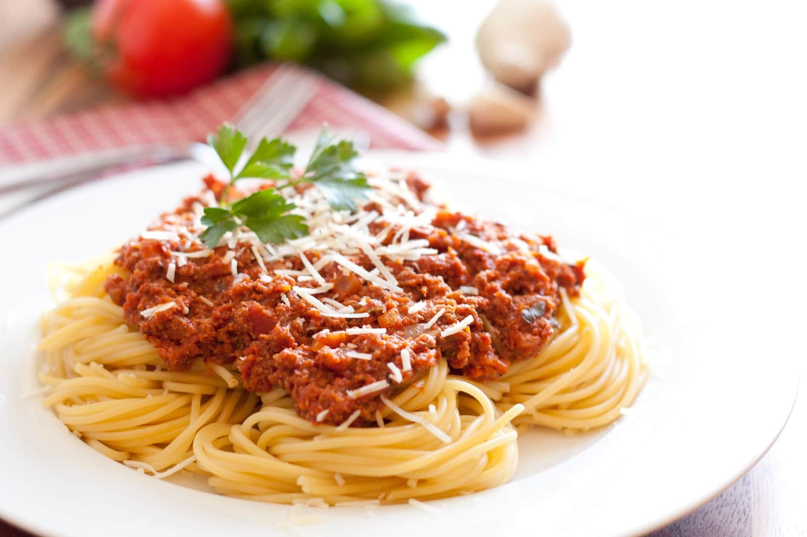

Italian Spaghetti

“Life is a combination of magic and pasta.”
1 cup: 158 calories, 9g fat (3g saturated fat), 38mg cholesterol,
738mg sodium, 8g carbohydrate (4g sugars, 1g fiber), 13g protein.
Spaghetti is a popular Italian pasta, often served with a tomato
sauce sometimes called spaghetti sauce. The Italian word spago
means string, and spaghetti is the plural of spago — a description
of what spaghetti looks like. Spaghetti straps are very thin
shoulder straps found on dresses and summery tops. In the late
1960s, "spaghetti westerns" were movies about the Wild West, filmed
in Italy and directed by Italians.
Ingredients
- 1/2 pound beef
- 3/4 cup thinly sliced green onions
- 3 cans (8 ounces each) tomato sauce
- 2 teaspoons sugar
- 1 teaspoon Worcestershire sauce
- 1/2 teaspoon salt
- 1/8 teaspoon pepper
- 1 can (2-1/4 ounces) sliced ripe olives, drained
- Cooked spaghetti
- Grated Parmesan cheese
- Bacon bits, optional
Procedure
- In a large skillet, cook beef and onions over medium heat until
meat is no longer pink; drain. Add the tomato sauce, sugar,
Worcestershire sauce, salt and pepper. Bring to a boil. Reduce
heat; cover and simmer for 10 minutes.
- Add olives; simmer 5 minutes longer. Spoon over spaghetti;
sprinkle with cheese and bacon bits if desired.